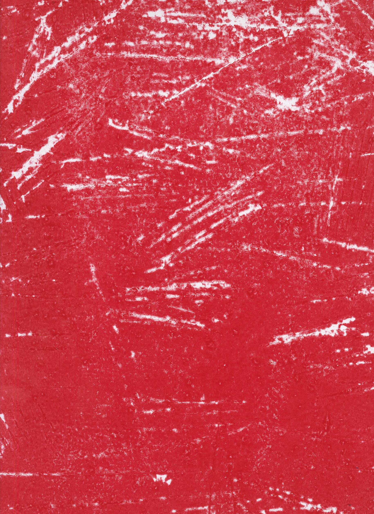
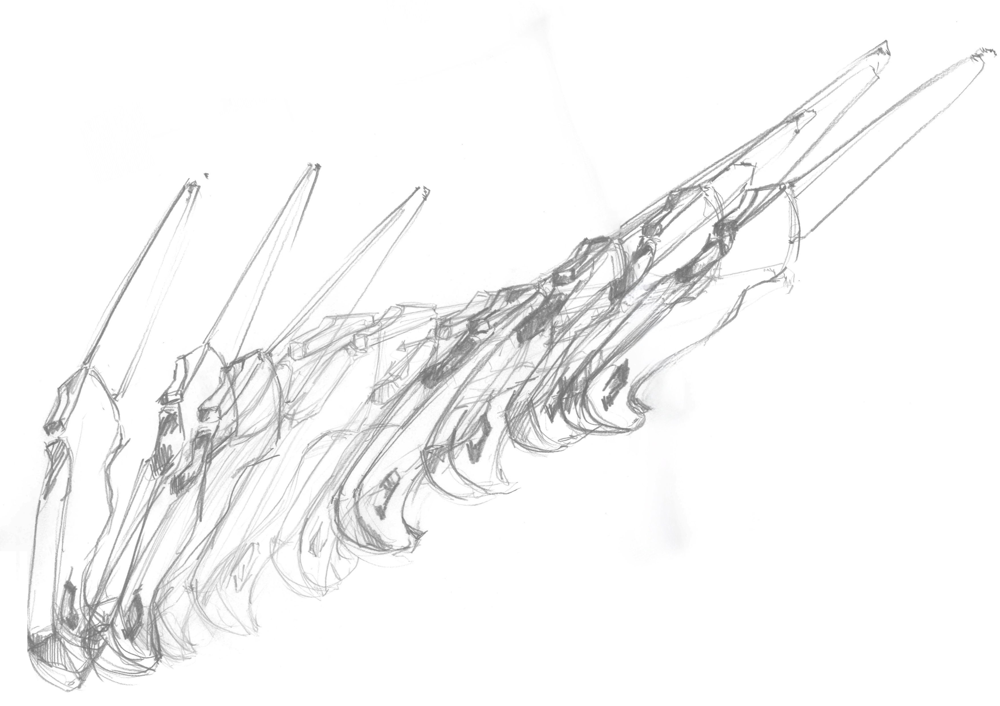
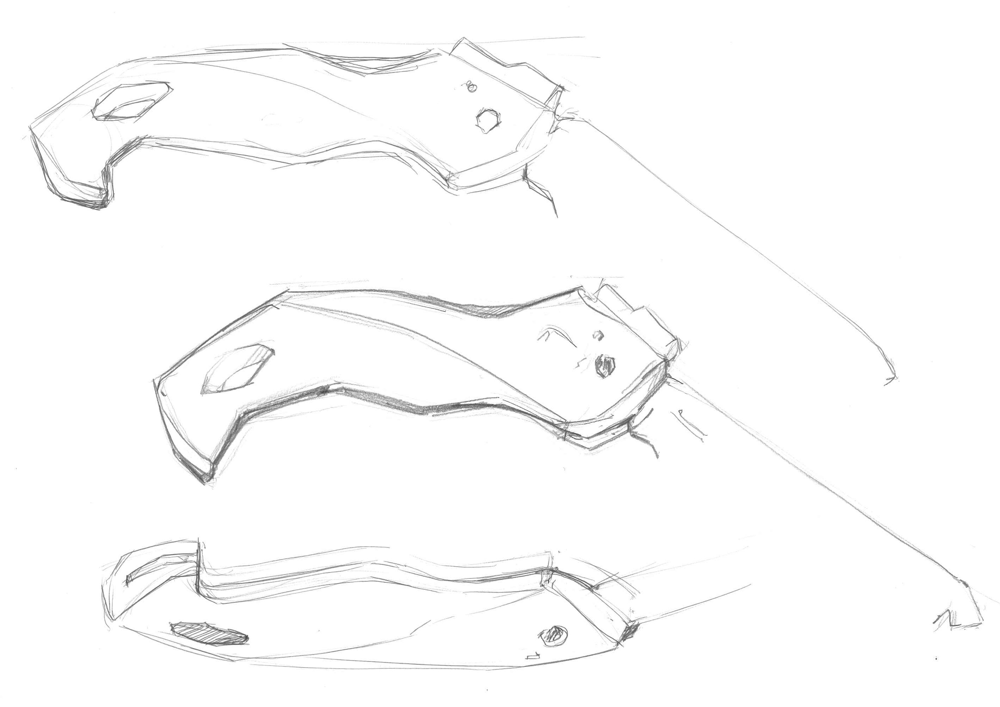

Verwilderung ist ein Analoges Projekt welches im Januar 2024 entstand.






Ein Gartenobjekt wird unzählige Male in unterschiedlichen Materialien und Formen umgesetzt. Über die gesamte Bandbreite der Umsetzungsarten, darunter Druck, Bleistift und Edding , wird die Säge zunehmend abstrakter. Anfangs noch detailliert, mit Vermerken zu Textur und Einzelteilen, erscheinen am Ende nur noch undeutlich definierte Formen der Anwendung. Die Säge tritt sowohl in Bewegung als auch statisch auf. Illustrative und grafische Ansätze verschmelzen, sodass am Ende über alle Blätter hinweg ein Gesamtbild entsteht, das die Fülle eines einfachen Objekts darstellen kann.